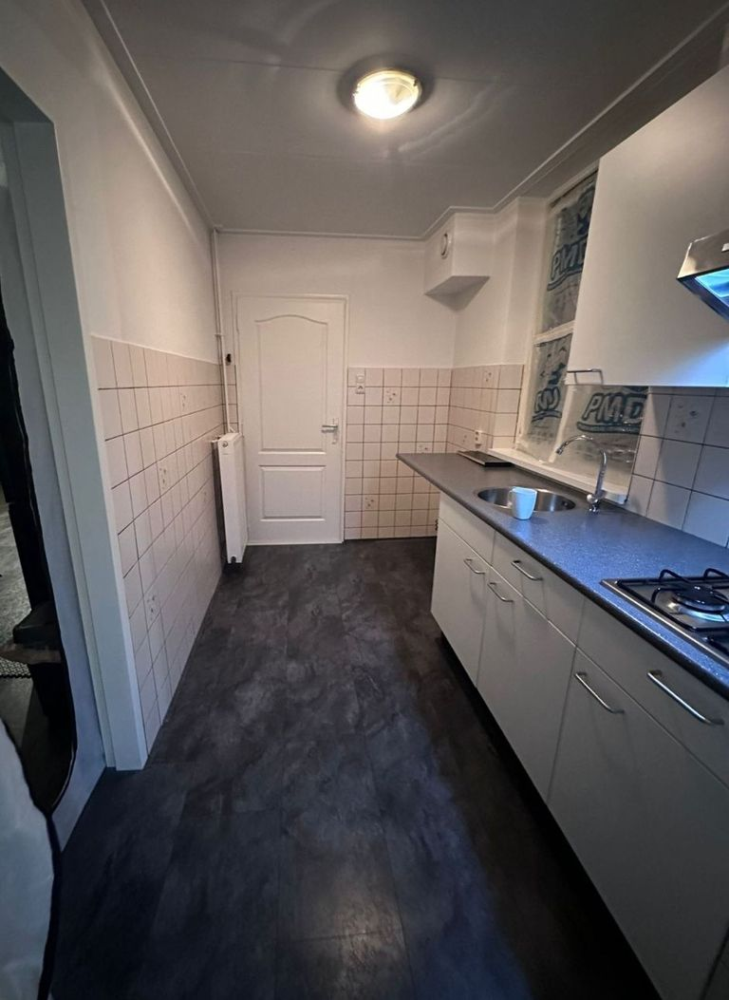
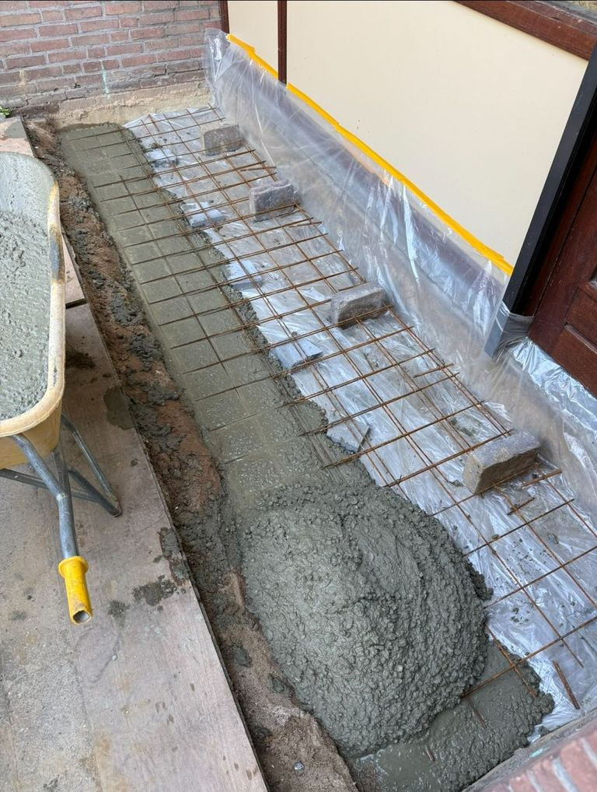
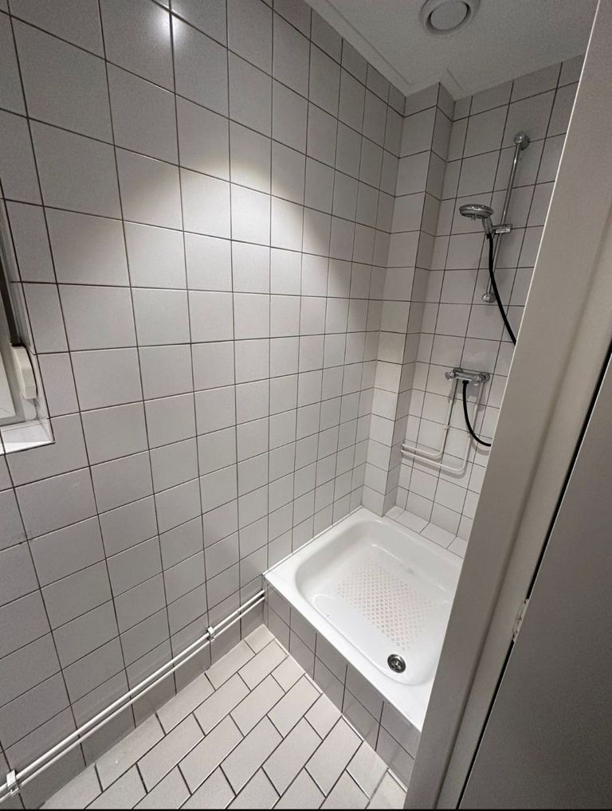
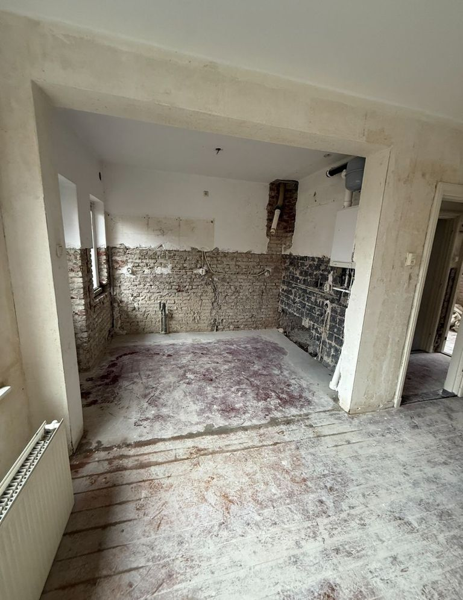
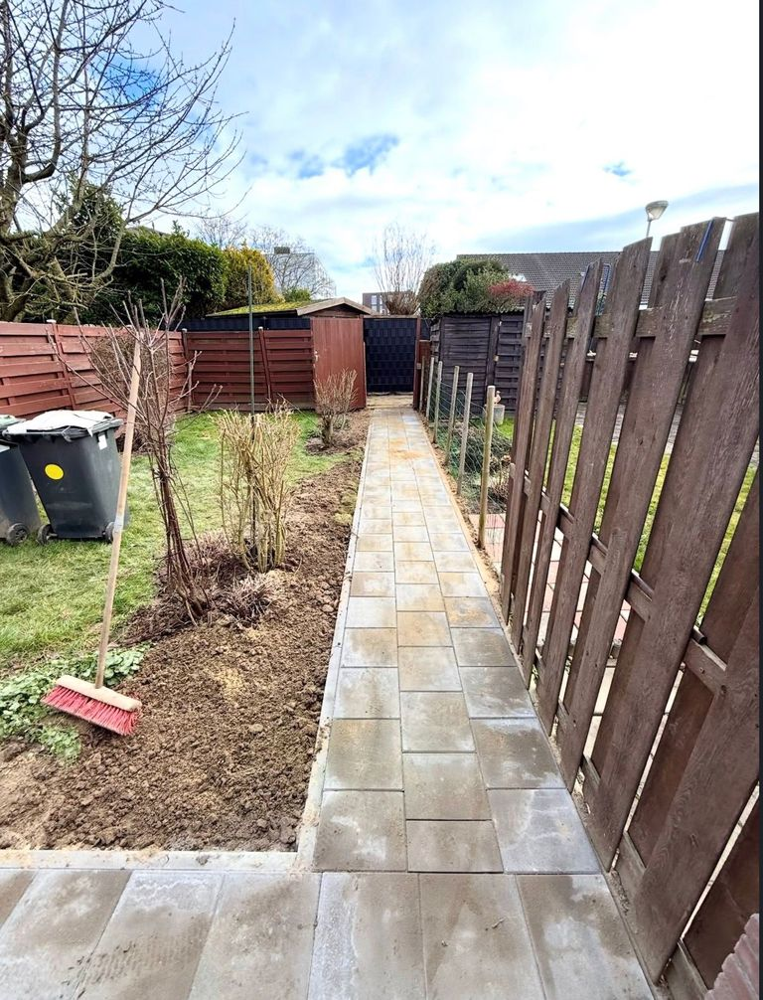
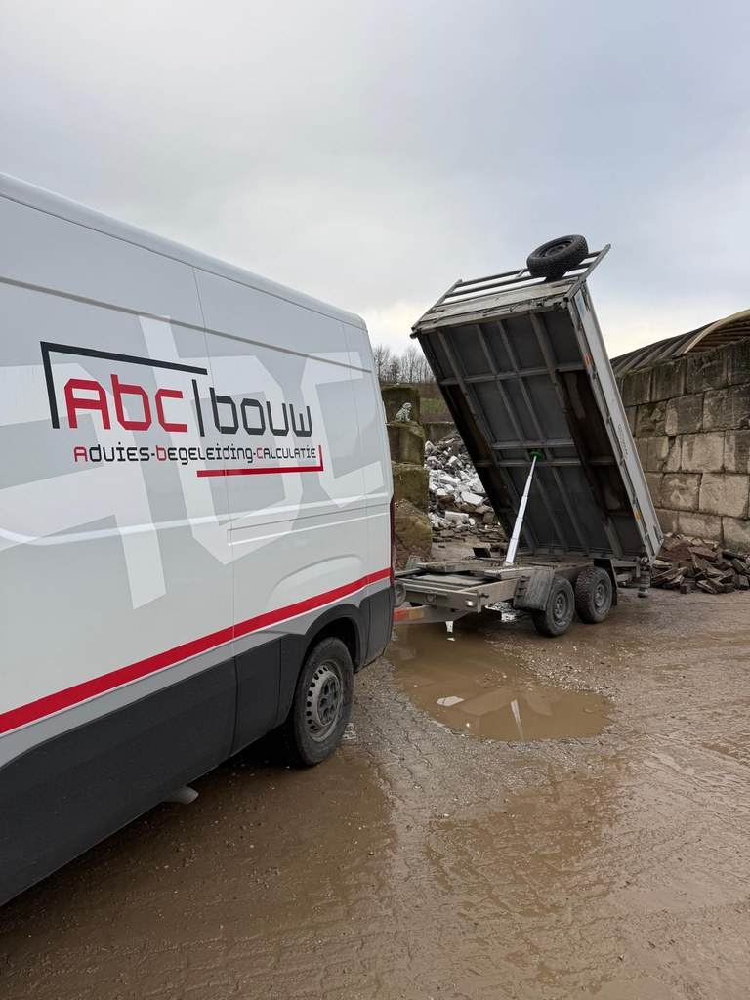

Elke verbouwing sluiten wij aan op uw wensen. Van het moderniseren van een ruimte tot een complete aanpassing.

Meer ruimte en licht in huis? Wij creëren extra leefruimte die past bij uw woning. Van ontwerp tot oplevering.

Goed onderhoud is de basis voor duurzaam woongenot. Wij houden uw pand in topconditie. Vakkundig en met oog voor kwaliteit.

Veilig en efficiënt slopen als voorbereiding op uw verbouwing. Zorgvuldig uitgevoerd en netjes opgeleverd.

Strak en duurzaam straatwerk met een solide basis. Kwalitatieve materialen die jarenlang meegaan.

Het hele traject uit handen: van planning tot oplevering. Korte lijnen en één aanspreekpunt. Wij ontzorgen u volledig.